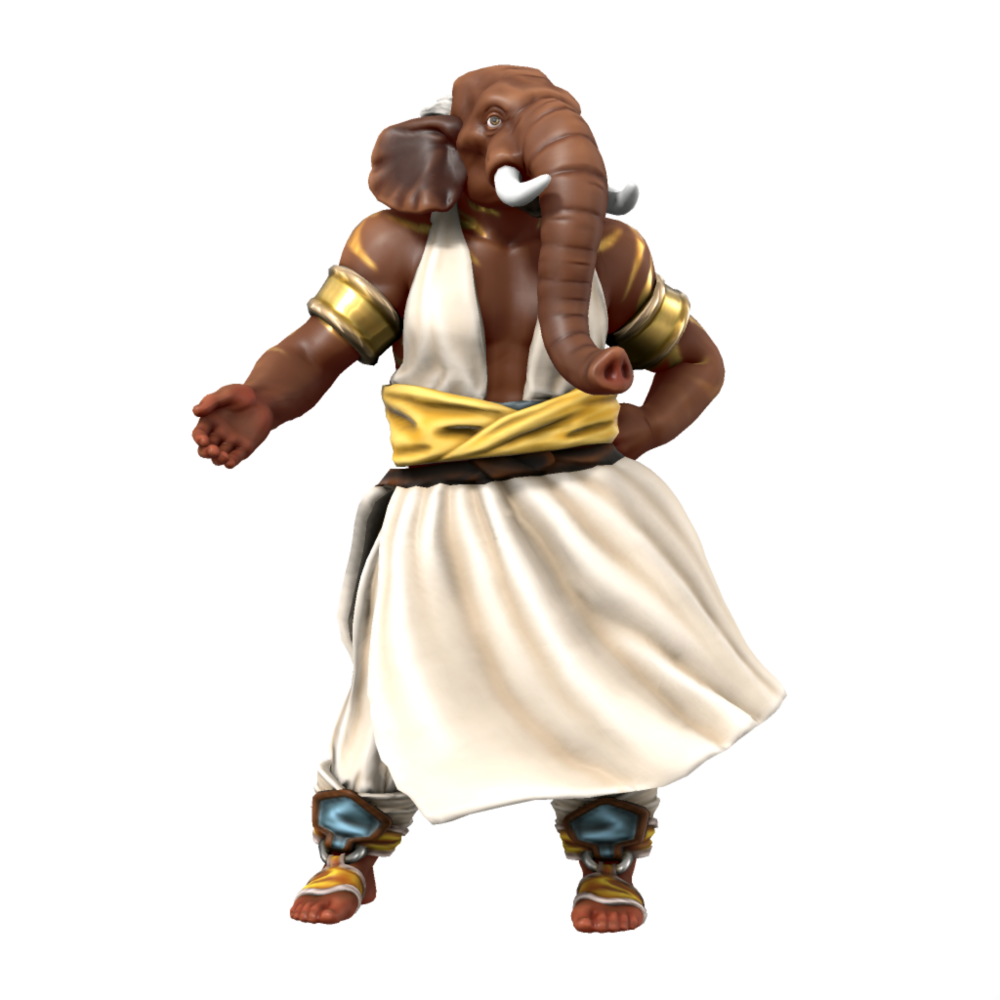

Loxodon
Native to what is now the elven kingdom of Kashar, loxodon are the descendents of survivors from Nasruk. In recognition of their martyrdom, the once human people were transformed in the likeness of Ouron and settled in Loxor, the region now known as Jami-Marub. Loxodon dwelt there long before it was settled by elves, but have since integrated well into Kasharite society.
Cultures
Nasruki Loxodon

Languages Low Nasruki
Accent üó£Ô∏è
Some particularly hardy loxodon choose to dwell around the outskirts of the desert of Nasruk, predominantly religious fanatics who believe in the inevitable restoration of Nasruk. Nasruki loxodon live a life of devotion to Ouron and reject the Kasharite religion, which they view as heresy. Nasruki loxodon exclusively speak low Nasruki, rejecting even common as a heretical language.
Kasharite Loxodon
k å É…ëraɪt

Languages Low Kushite, Common, Nasruki Kushite, High Kushite (elites only)
Accent üó£Ô∏è
The majority of loxodon live in Kashar, mostly in Jami-Marub, integrating with little friction into Kasharite society and living much as any other Kasharite might. Loxodon in Kashar generally speak either high or low kushite, though some loxodon-specific religious rites are performed in the otherwise extinct language nasruki kushite.
Despite their appearance stemming from the devotion of ancient Nasruk to the Ouron Teng, most Loxodon now practice the Kasharite faith. After the annexation of Loxor into Kashar, the incoming Kash rulers converted temples and sacred sites from the old faith into centers of worship for the Sacred Flame, converting the conquered Loxodon and recruiting them as clergy. Because of their proximity to major temple infrastructure, many Loxodon in the modern era continue to serve as clergy.
Ageing
| Age | Human Equivalent |
|---|---|
| 6 | 4 |
| 16 | 8 |
| 28 | 12 |
| 43 | 16 |
| 58 | 20 |
| 90 | 30 |
| 120 | 40 |
| 150 | 50 |
| 180 | 60 |
| 210 | 70 |
| 240 | 80 |